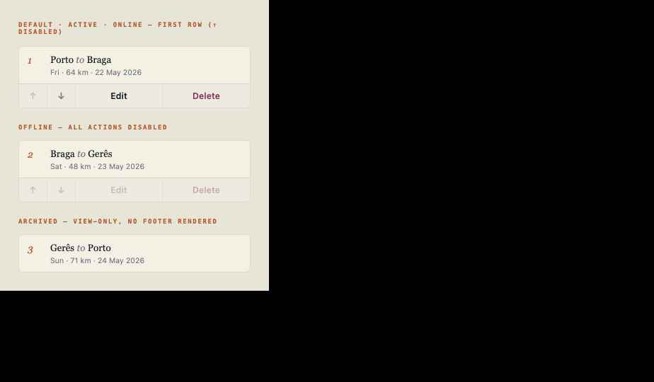
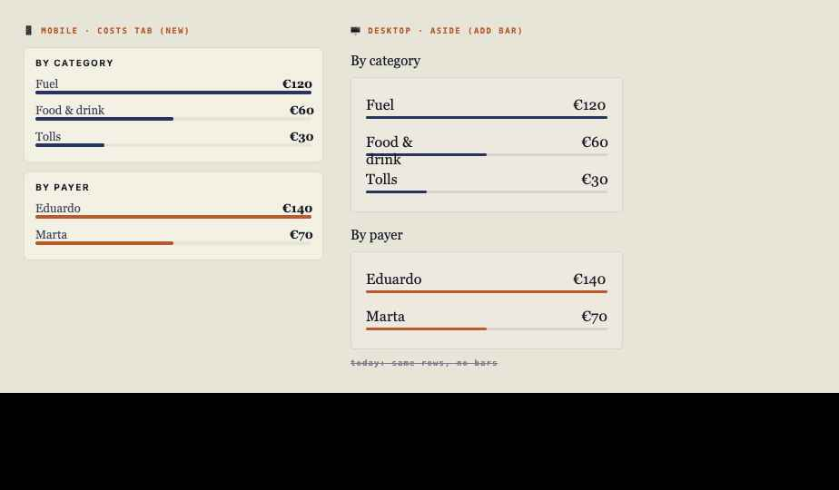

A design-system handover: small, self-contained specs — tokens, markup, states, behaviour, data and acceptance — that Claude Code consumes one screen at a time to land v3 on the real eduardojmesteves/routefolk@main codebase.
Markdown for Claude Code; this page for you. Read the docs in order.
Brief, atom inventory, build order, conventions, the checkpoint.
What main already ships vs. the real v3 gaps. Stale file paths corrected.
Canonical tokens, their source files, and the 5 missing tokens (F0).
The 8-section contract + a copy-paste skeleton.
Per-atom + release gates, definition of done, anti-criteria.
One spec per atom; one pinned reference render per atom.
Half the original IMPLEMENTATION.md is obsolete. v3 is a render + handler + token job, not a data job.
| Layer | Status in main | Verdict |
|---|---|---|
| Stage / journal data updateStage · deleteStage · swapStageOrder (atomic RPC) · updateEntry · deleteEntry | Already shipped in lib/stages.js · lib/journal.js | DONE · reuse |
| Navigate button | navigateButtonHtml() — already state-aware (archived/offline/no-coords) | DONE · call it |
| Atom convention | components/atoms/*Html({prefix}) — copy this shape | DONE · follow |
| Tokens | shell.css defines --rf-d2-*; --rf-m2-* alias them; 4 palettes | 5 GAPS · F0 |
| Stage actions / entry icons / breakdown bars / edit wizards | Renderers + handlers not built (or partial) | BUILD |
📱 mobile · 🖥 desktop · ♊ shared | done partial missing
| ID | Atom | Surface | State | Builds in |
|---|---|---|---|---|
| F0 | Token additions (danger · danger-soft · m2-surface-2) | ♊ shared | missing | shell.css · interface-polish.css |
| F1 | Write/visibility guards | ♊ shared | missing | render/shared.js |
| F2 | Confirm-dialog copy contract | ♊ shared | missing | app-actions.js |
| M1 | Stage card — split tap-target + footer | 📱 mobile | missing | stages-mobile.js |
| M2 | Stage action footer (↑ ↓ Edit Delete) · example | 📱 mobile | missing | stages-mobile.js |
| M3 | Stage drill-in action pills | 📱 mobile | partial | stages-mobile.js |
| M4 | Journal entry row + ✎ ✕ | 📱 mobile | partial | stages-mobile.js |
| M6 · M7 | Mobile stage / journal edit wizards | 📱 mobile | missing | wizards/* |
| D1 | Stage aside actions (Edit · Delete · ↑ · ↓ · Nav) | 🖥 desktop | partial | stages-desktop.js |
| D2 | Desktop journal entry + ✎ ✕ (3-col) | 🖥 desktop | partial | stages-desktop.js |
| D3 · D4 | Desktop stage / journal edit wizards | 🖥 desktop | missing | stages-desktop.js |
| S1 | Costs breakdown card (bars) · example | ♊ shared | partial | costs-mobile/desktop.js |
| H1 · H2 · H3 | Edit/delete/reorder + save-on-edit handlers | ♊ shared | missing | app-actions.js |
Every atom is one file with exactly these sections — matching what you asked each atom to contain.
Rendered with the real production tokens (midnight palette) and the exact atom CSS. This is the depth every stub will reach.

The ↑ ↓ Edit Delete row under each stage card. Reorder calls the atomic swapStageOrder RPC; delete uses the F2 confirm copy.

One factory, two surfaces. Adds the proportional bar to desktop (bar-less today) and the whole card to mobile (missing today). Reads aggregateExpense().
The bar each atom — and the release — must clear.
Builds & verifies alone; deps are listed and earlier in the order.
Every claim greps to a real file, function, class or token.
Every state with a precise trigger predicate (not "when archived").
Exact tokens + px; GWT with verbatim copy strings.
Calls shipped data fns / Navigate atom; never re-implements.
Survives all four palettes — the reason F0 ships first.
Tick these off (or tell me what to change) and I'll fill every remaining atom to M2/S1 depth, each with its own pinned render.